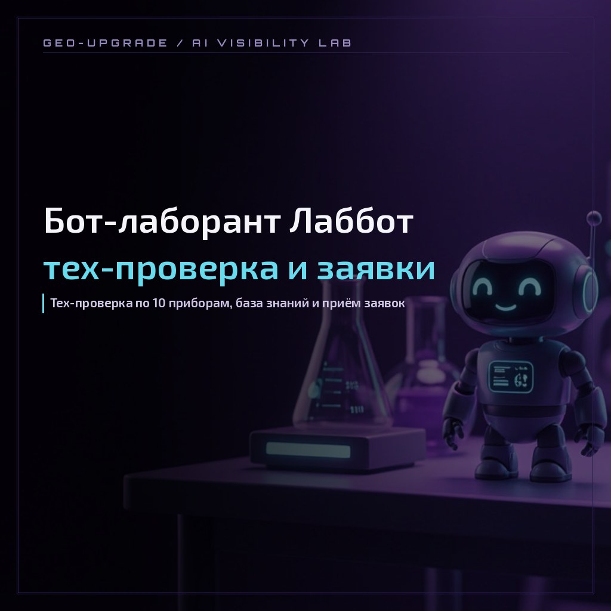
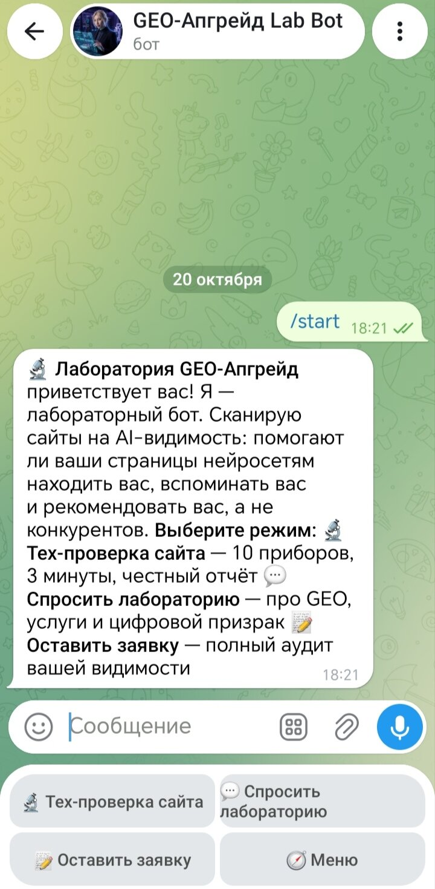
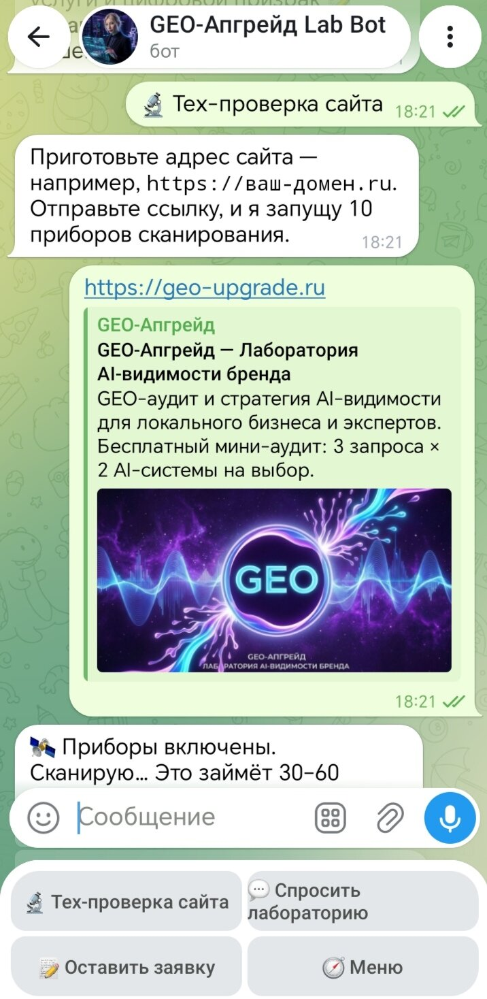
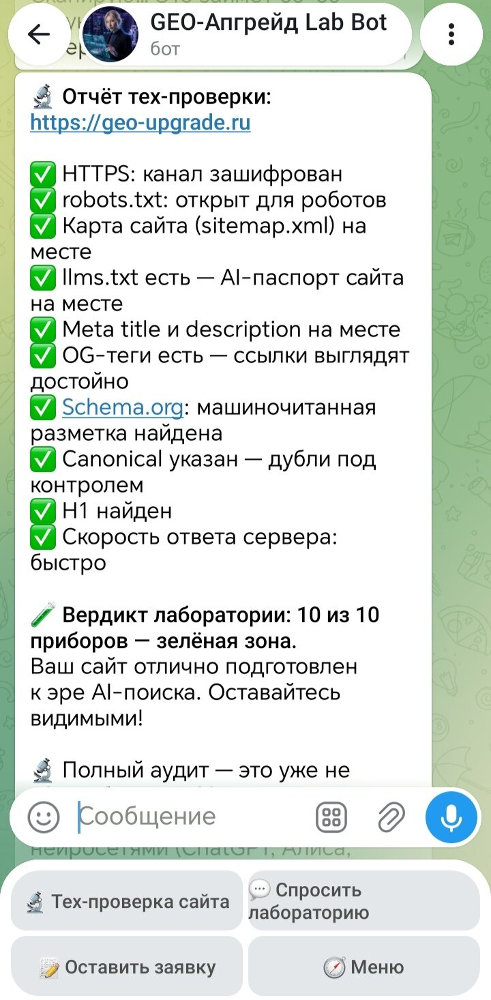
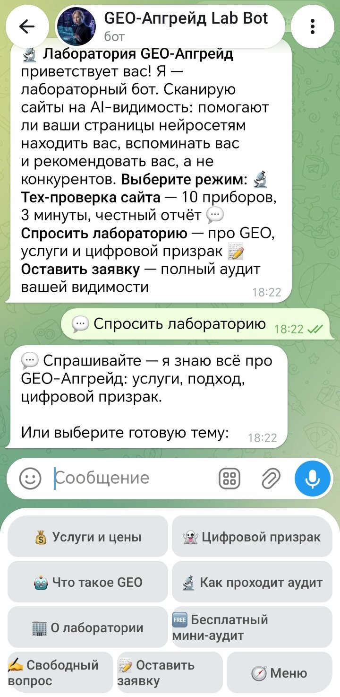
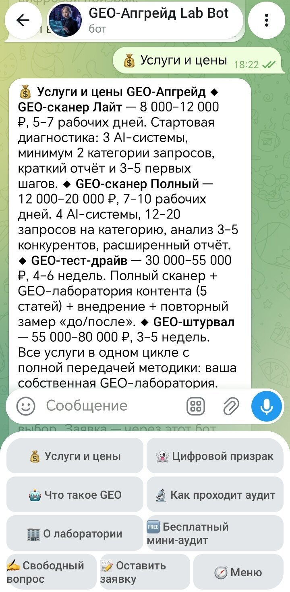
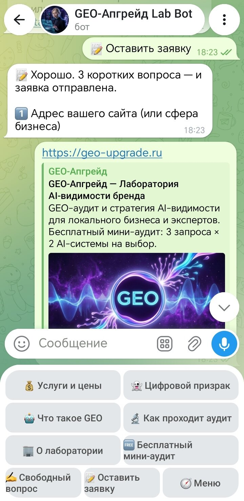
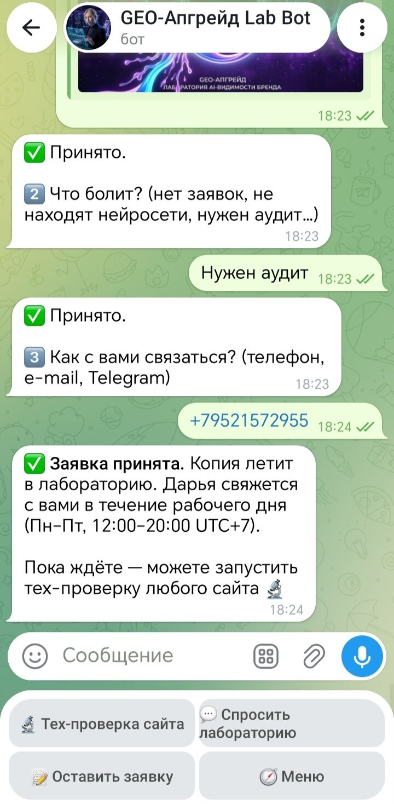
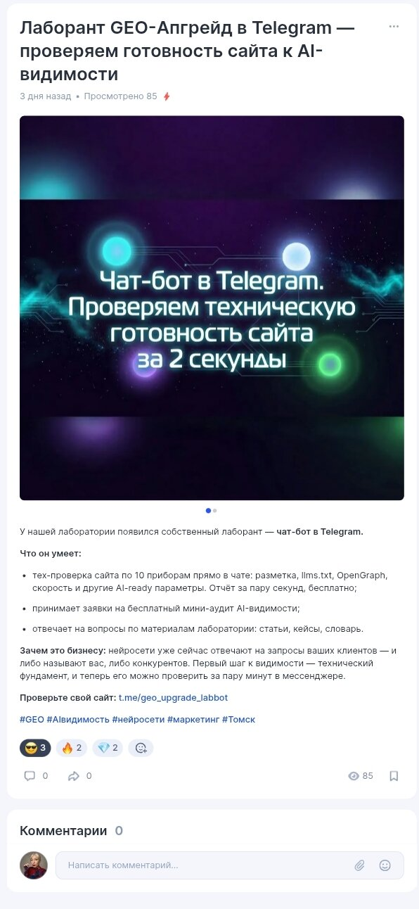

CASE LAB · TELEGRAM-БОТ · КЕЙС НА WORKSPACE
Бот-лаборант Лаббот: тех-проверка, база знаний и заявки
Как лаборатория GEO-Апгрейд собрала первую линию на Telegram: 10 приборов тех-проверки сайта, база знаний без языковой модели и приём заявок, где каждая заявка — готовый AI-лид. Без серверов, без бюджета, за один вечер.

Case type: Lab Protocol
| Экспонат | EXH-09 · бот-лаборант Лаббот (@geo_upgrade_labbot) |
|---|---|
| Запуск | 17 октября 2026, введён в строй в первый день |
| Работа | тех-проверка сайта по 10 приборам · база знаний лаборатории · приём заявок |
| Вердикты | 9–10 — зелёная зона · 6–8 — точки роста · ниже 6 — зона слепоты |
| Заявки | 3 вопроса → личка основателя + почтовый дубль; каждая заявка — AI-лид |
| Инфраструктура | Cloudflare Worker (бесплатный уровень), без серверов и бюджета |
| Ограничения | лимит 3 тех-проверки в день на человека; мини-аудит AI-видимости — следующий этап |
1. Зачем боту быть первой линией
Клиенты GEO-маркетинга приходят не из поисковой строки, а из ответов нейросетей и мессенджеров. Первый контакт лаборатории должен работать круглосуточно и без ожидания — иначе часть AI-лидов просто уходит, пока основатель спит или занят.
Нужен был бот-лаборант, который делает три работы сразу: прогоняет сайт по технической части (первичный аудит технической готовности сайта), отвечает на вопросы из базы знаний лаборатории и принимает заявки. Сверх этого — превращать случайного гостя в AI-лида: человека, о котором лаборатория знает сайт, боль и контакт ещё до первого разговора.

Правило лаборатории: бренд, который продаёт GEO-автоматизацию, обязан первым показывать собственную автоматизацию. Бот-лаборант — эксперимент над самими собой: прежде чем продавать, автоматизировали свою первую линию.
2. Тех-проверка: 10 приборов и вердикты
Гость отправляет боту адрес — и за считанные секунды получает отчёт технической проверки. Десять приборов, часть — с градацией «нет / наполовину / полностью»: пустой description и медленный ответ сервера не равны полному отсутствию.

| Прибор | Что проверяет |
|---|---|
| 1 · HTTPS | работает ли защищённое соединение |
| 2 · robots.txt | пуст ли файл для краулеров и AI-агентов |
| 3 · sitemap.xml | есть ли карта сайта по стандартному адресу |
| 4 · llms.txt (AI-паспорт) | описан ли сайт для нейросетей машиночитаемо |
| 5 · Meta title | есть ли заголовок страницы |
| 6 · Meta description | заполнено ли описание или пустое (наполовину) |
| 7 · OG-теги | готов ли сайт к превью в соцсетях и мессенджерах |
| 8 · Schema.org | есть ли разметка структурированных данных |
| 9 · Canonical | указан ли канонический адрес страницы |
| 10 · Заголовок H1 | есть ли главный заголовок |
Отдельный прибор — скорость ответа сервера: не дольше 10 секунд, иначе наполовину. Сумма приборов даёт вердикт лаборатории: 9–10 — зелёная зона, 6–8 — точки роста, ниже 6 — зона слепоты: «нейросети вас почти не видят». К каждому вердикту — мостик к полному аудиту. Лимит 3 проверки в день на человека — защита от износа.

3. База знаний без языковой модели
Режим вопросов построен так, что бот отвечает только тем, что подтверждено материалами лаборатории. Шесть готовых тем: услуги и цены, «цифровой призрак», что такое GEO, как проходит аудит, о лаборатории, бесплатный мини-аудит. Плюс свободный вопрос — поиск по llms-full.txt, машиночитаемой базе знаний лаборатории.


Фишка архитектуры: если ответа в базе нет, бот честно отвечает «не буду выдумывать». Галлюцинации исключены архитектурой, а не обещанием. Для лаборатории, которая преподаёт GEO, говорить правду о себе — вопрос доверия.
Это тот же принцип, что и в остальной работе GEO-Апгрейд: видимость в нейросетях начинается с согласованных фактов, а не с обещаний. Бот не «генерирует ответы» — он проводит по документации лаборатории, как лаборант по регламенту.
4. Приём заявок: каждая заявка — AI-лид
Третий режим — заявка. Бот задаёт три вопроса: сайт или сфера, что болит, контакт. Дальше заявка уходит в личку основателя с пометкой источника и дублируется на почту — почтовый дубль гарантирует, что заявка не потеряется даже при сбое Telegram.


К моменту первого разговора у лаборатории уже есть всё: сайт, боль и контакт. Это и есть AI-лид в нашей терминологии — лид, собранный цифровой средой до первого сообщения человека.
5. Как это сделано: стек
| Компонент | Решение |
|---|---|
| Платформа | Cloudflare Worker — бесплатный уровень, без серверов |
| Интерфейс | Telegram Bot API (бот-лаборант @geo_upgrade_labbot) |
| База данных | архитектура без БД: база знаний — файлы llms.txt / llms-full.txt на сайте |
| Дубль заявок | Formspree — почтовая копия каждой заявки |
| Разработка | Cloudflare Dashboard + веб-интерфейс GitHub |
| Аналитика | Яндекс Метрика (страница контактов) |
Бюджет инфраструктуры — ноль рублей. Точнее: воркер живёт на бесплатном уровне Cloudflare, а база знаний — те же файлы, по которым сайт уже читается нейросетями.
6. Результат и что дальше
- У лаборатории есть круглосуточная первая линия: бот встречает гостя, отвечает по базе знаний, проводит тех-проверку и собирает заявки.
- Тех-проверка за секунды: первичная картина технической готовности сайта — 10 приборов, честный отчёт с вердиктом, без брифов и переписок.
- База знаний без галлюцинаций: ответы только из подтверждённых материалов лаборатории.
- Воронка AI-лидов в одну сессию: тех-проверка → вердикт → предложение полного аудита → заявка в личку основателя.
- Ноль расходов на инфраструктуру: бесплатный уровень Cloudflare, поиск без языковой модели.
- Появление бота анонсировано в соцсетях — карточка лаборанта опубликована и на TenChat.
- Следующий этап — мини-аудит AI-видимости силами бота: первичный замер видимости бренда в нейросетях с дублированием результата основателю.

Хотите такой бот-лаборант для своего бизнеса? Схема переносится: тех-проверка, база знаний и приём заявок настраиваются под любой сайт — и начинают собирать AI-лиды с первого дня.